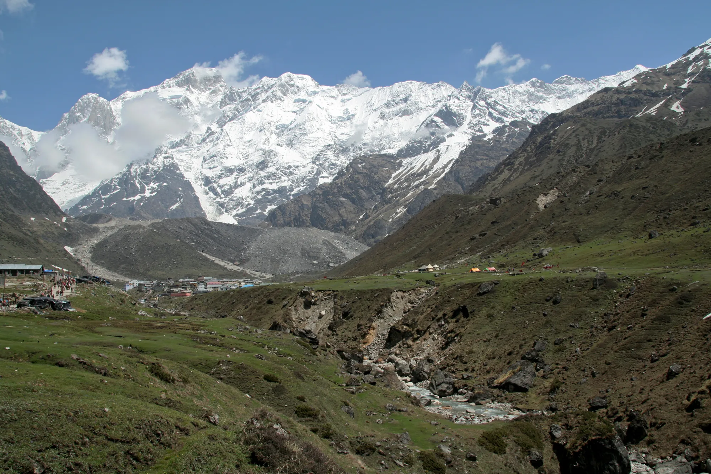
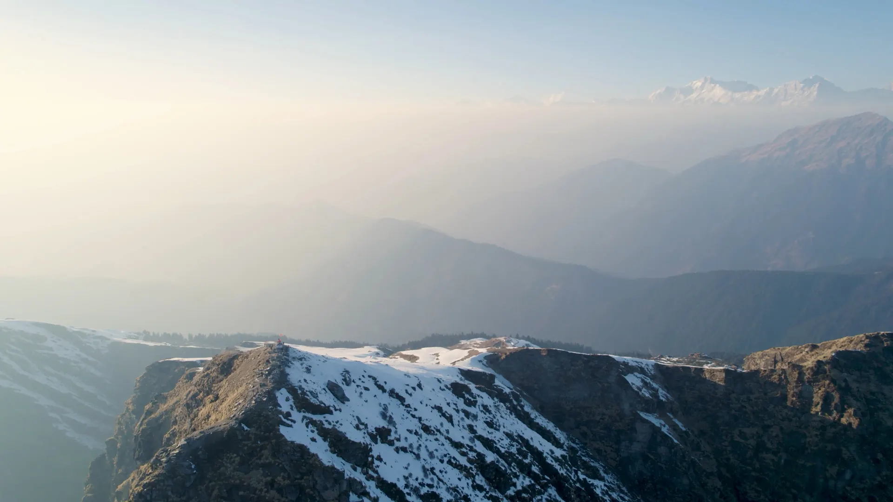

- Both are five-day Uttarakhand winter treks graded easy to moderate, with best snow from December to February. Kedarkantha is 76 m higher (3,810 m against 3,734 m).
- Pick Kedarkantha for a sunrise summit and a more forested approach; pick Brahmatal for two lakes and a ridge facing Trishul.
- Operator prices are close: about 8,500 to 10,500 rupees plus 5% GST, before transport in some cases.
Kedarkantha and Brahmatal are both five-day winter treks in Uttarakhand, graded easy to moderate, with their best snow from December to February. Choose Kedarkantha if you want a sunrise summit above 3,800 m; choose Brahmatal if you prefer frozen lakes and a ridge that looks straight at Trishul.
Kedarkantha vs Brahmatal at a glance
The numbers below come from our comparison page and the Kedarkantha and Brahmatal trek pages, which cite their sources.
| Kedarkantha | Brahmatal | |
|---|---|---|
| Highest point | 3,810 m | 3,734 m |
| Days on trail | 5 | 5 |
| Difficulty | Easy to moderate | Easy to moderate |
| District | Uttarkashi | Chamoli |
| Best months | Dec to Feb | Dec to Feb |
| Also possible | Oct to Nov, Mar to Apr | Nov, Mar |
| Walking | 23 km over 4 days | 21.5 km over 4 days |
| Climb from the start village | 1,860 m from Sankri | 1,400 m from Lohajung |
| Peaks in view | Swargarohini, Black Peak | Trishul, Nanda Ghunti, Chaukhamba |
| Winter nights | -10 to -15 C | 0 to -8 C |
Crowd levels are not in our sources, so we do not compare them. Both start from remote villages with limited phone signal, so tell family you will be offline.

How do the five days differ?
On Kedarkantha you drive about 190 km from Dehradun to Sankri on day 1 (8 to 10 hours), then sleep at 2,773 m, 3,413 m and, after the summit, 2,700 m. The summit walk starts at about 4 a.m. to be on top at sunrise, which is the hardest day. Brahmatal begins with a drive of about 220 km from Kathgodam (8 to 10 hours) to Lohajung, at 2,331 m. Camps follow at Bekal Tal (about 3,000 m), on the Tilandi ridge and near Brahmatal lake (about 3,230 m). Its longest day is the final 8.5 km descent, 7 to 8 hours.
That makes Kedarkantha's highest sleeping altitude the higher of the two on our pages. Our altitude gain guide explains why the first night above 3,000 m deserves care on either trek.
Which has the better views?
Kedarkantha's summit is an open snow slope with a small shrine and views toward Swargarohini and Black Peak. Brahmatal's selling points are its two lakes, Bekal Tal and Brahmatal, which can freeze in peak winter, and the ridge facing Trishul. Treqz lists Trishul at 7,120 m and Nanda Ghunti at 6,309 m. Cloud and snowfall decide what you actually see on any given day, so treat views as a bonus, not a promise.

Cost, getting there and bags
Prices are set by operators, and they change. From their own pages in October 2026:
- Bikat Adventures lists Kedarkantha at ₹9,500 plus 5% GST, with Dehradun transport as a ₹2,500 add-on.
- Himalayan Dream Treks lists Brahmatal at ₹8,499 plus 5% GST including transport from Rishikesh, or ₹6,499 plus GST without transport.
Our trek cost guide explains what is included. For both, plan on a rented padded jacket, shoes and poles unless you own them; see the packing list.
The road to the start is a big part of both trips. For Kedarkantha, our trek page lists a bus from Dehradun to Sankri at 8 a.m. taking 9 to 10 hours at ₹300 to 450, or a private cab at ₹3,500 to 7,000 for four or five people; a seat in an operator's cab is about ₹750 to 850. There is no ATM in Sankri, so draw cash in Dehradun or Purola. For Brahmatal there is no direct bus from Kathgodam to Lohajung; Himalayan High lists a direct bus from Rishikesh ISBT at 5 a.m., and Trekkaro puts a shared cab from Rishikesh at about ₹6,500 one way per 5 to 6 seat car. The last ATM before Lohajung is at Dewal.
If you do not want to carry your pack, Bikat lists bag offloading at ₹1,400 for Kedarkantha and ₹1,600 for Brahmatal, though its Kedarkantha page advises against it. Bikat also lists rented shoes, poles, a fleece jacket and a rucksack for Kedarkantha, handed out in Sankri on day 1.
Permits, signal and foreign trekkers
Kedarkantha is inside Govind National Park. The park's website lists an entry fee of ₹200 for Indians and ₹600 for non-Indians for three days, and operators usually arrange the permit at the Sankri forest gate. Brahmatal operators arrange forest permits too; foreigners may pay more and need a passport. See each trek page for the foreign-trekker notes, and our permits guide for the wider picture.
Medical help is far from both trails. Our Kedarkantha page lists the health centre at Purola as the nearest hospital and notes there is no doctor on the trek; for Brahmatal it lists Dewal, about 30 km from Lohajung. Operators carry first-aid kits and oxygen cylinders, and Himalayan Dream Treks lists stretchers too, but rescue costs are not part of the trek fee, so consider insurance.
Who should pick which?
- Pick Kedarkantha if you want the classic summit-at-sunrise, the park-forest approach, and are fine with a pre-dawn start in temperatures that can drop to -15 C.
- Pick Brahmatal if you prefer frozen lakes, a ridge walk facing Trishul and slightly milder nights, and can manage a long final descent.
- Want something gentler? Dayara Bugyal is graded easy; see best winter treks.
If you want to compare the terrain before you decide, fly both routes in 3D on Treqz and see how each spends its height.
General planning information, not medical advice. Prices, dates and rules change; confirm with your operator. Treqz does not run treks.
Sources
- Bikat Adventures: Kedarkantha trek
- Himalayan Dream Treks: Brahmatal
- Himalayan High: How to reach Lohajung
- Trekkaro: Brahmatal trek
- Govind Wildlife Sanctuary and National Park: Kedarkantha trek page
Quick questions
Is Kedarkantha or Brahmatal better for a first trek?
Both are graded easy to moderate in their sources. Kedarkantha has a hard 4 a.m. summit day and Brahmatal's longest day is the 8.5 km descent, so choose by the kind of effort you handle better.
Which is colder, Kedarkantha or Brahmatal?
Bikat Adventures lists Kedarkantha nights at about -10 to -15 C. Himalayan Dream Treks lists Brahmatal winter nights at 0 to -8 C. Both are cold; carry a proper padded jacket either way.
Which has better mountain views?
Kedarkantha looks to Swargarohini and Black Peak, among others. Brahmatal's ridge faces Trishul (7,120 m) and Nanda Ghunti (6,309 m). Views depend on the weather on the day.
Can I do both in one winter?
Yes, they are about 168 km apart in a straight line and are on different road routes (Dehradun to Sankri for Kedarkantha, Kathgodam or Rishikesh to Lohajung for Brahmatal), so plan them as separate trips.